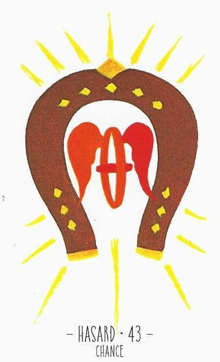

43
기회
Chance긍정

그림 읽기
U자 모양의 말편자(말발굽) 안에 날개 달린 바퀴. 말편자는 서양의 대표적 행운 부적으로, 날개 바퀴는 이동과 변화를 뜻합니다.
기회행운횡재좋은 시기금전운대박운
핵심 내용
- 기회·행운·횡재·좋은 시기·매매
- 우연의 일치, 갑작스럽게 생기는 뜻밖의 일
- 기회를 잡을 것, 뜻밖의 돈이나 활동하기 적합한 시기
- 유쾌하고 행복함
- 도장을 찍을 만한 일(매매)
- 인생의 기회, 좋은 타이밍, 천운, 길성
주요 메시지
행운의 카드 — 긍정적 변화와 행운의 도래
적극적 포착 — 행운은 저절로 오지 않으므로 잡아야 함
실생활 적용
기회와 변화 — 인생의 중요한 기회, 큰 결정·계약을 앞둔 상황
금전의 상승 — 투자·금융 활동의 좋은 결과
학습 노트
우연과 운에만 의존하지 말고 적극적으로 상황을 주도하라는 조언.
조합 메모
43번+13번 = 금융 기회로 재정 상태 개선
43번+24번 = 상업적인 일의 행운, 궁합 좋은 인연

26번+33번+43번 = 속박에서의 회복, 해방과 자유